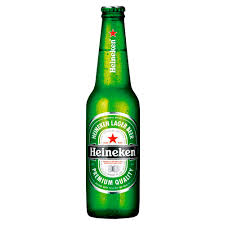
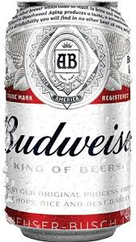
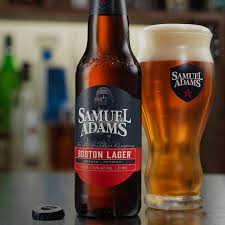
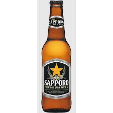
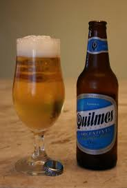
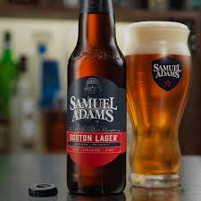
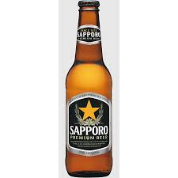
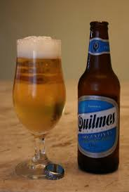

Cerveja

História
Há cerca de 10 mil anos atrás o homem descobriu o processo de fermentação, no que surgiu as primeiras bebidas alcoólicas.
Há evidências de que a prática da cervejaria originou-se na região da Mesopotâmia onde a cevada cresce em estado selvagem.
A primeira cerveja produzida foi, provavelmente, um acidente.Documentos históricos mostram que em 2100 a.C. os sumérios alegravam-se com uma bebida fermentada, obtida de cereais.
Na Suméria, cerca de 40% da produção dos cereais destinavam-se às cervejarias chamadas "casas de cerveja", mantida por mulheres.
A expansão definitiva da cerveja se deu com o Império Romano, que se encarregou de levá-la para todos os cantos onde ainda não era conhecida.
Júlio César era um grande admirador da cerveja e, em 49 a.C., depois de cruzar o Rubicão, ele deu uma grande festa a seus comandantes, na qual a principal bebida era a cerveja.
A César também é atribuída a introdução de cerveja entre os britânicos, pois quando ele chegou à Britânia, esse povo apenas bebia leite e licor de mel.
Através dos romanos a cerveja também chegou à Gália, hoje a França.
Tome dessas aí
Cardápio
- -Heineken
- - $ 10,00 (Se dirigir não beba!)
- -Budweiser
- - $ 12,00 (Se dirigir não beba!)
- -Amstel
- - $ 13,00 (Se dirigir não beba!)
- -Samuel Adams
- - $ 17,00 (Se dirigir não beba!)
- -Saporo Premium
- - $ 20,00 (Se dirigir não beba!)
- -Quilmes Cristal
- - $ 20,00 (Se dirigir não beba!)
Nossas Cervejas


 




